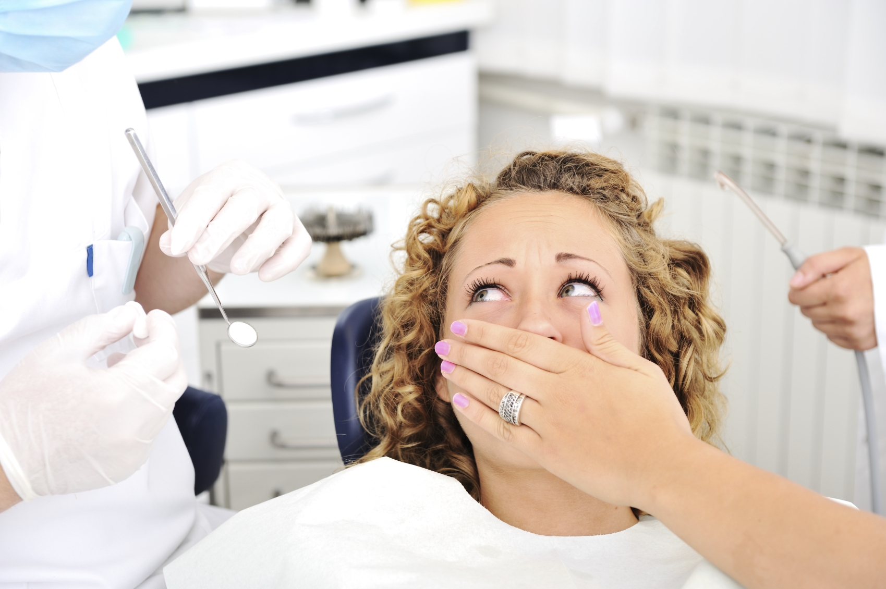

Боюсь идти к стоматологу. Что делать?

Каждому из нас рано или поздно приходится посетить кресло стоматолога. Но мы любыми способами
постоянно откладываем это дело. По результатам опроса большинство населения планеты боится идти к
стоматологу и испытывает сильнейший стресс.
Дентофобия – научный термин, который означает страх и боязнь перед стоматологическим лечением. Но
откуда же возникает этот страх и что делать, чтобы искоренить это чувство? Этому есть несколько
причин.
Причины дентофобии
- Страшные рассказы от знакомых. Когда-то вам рассказали историю о неудачном походе к стоматологу, и это засело в голове? Большинство таких историй произошли еще в советское время, когда лечили, а иногда и удаляли зубы без анестезии! Не было такого огромного количества современного оборудования и препаратов, которые позволяют провести стоматологическую процедуру безболезненно и в самое короткое время.
- Неудачный опыт из прошлого. Воспоминания с детства или с последнего визита к стоматологу, осложнение после предыдущего лечения, сильная боль при лечении – все это оставляет негативные чувства и усиливает чувство страха.
- Боязнь боли. Низкий болевой порог у пациента – еще одна причина дентофобии. При отсутствии или плохой анестезии зубная боль особенно сильная. Поэтому рекомендуем обратиться в клинику «Современная стоматология 32 зуба», ведь они используют современные препараты для анестезии.
Вот еще несколько причин, почему вы, возможно, боитесь идти к врачу стоматологу:
- непереносимость вида крови;
- боязнь уколов и игл;
- страх перед неизвестностью;
- стресс;
Как избавиться от боязни идти к стоматологу
- Постарайтесь не откладывать лечение. Как бы странно это не звучало, но чем дольше вы будете откладывать момент похода к стоматологу, тем сложнее будет в дальнейшем. Ведь лечение будет проходить чуть дольше. А если вы доведете до осложнения, то и больнее, что еще больше усилит страх.
- Запишитесь сначала на консультацию, обсудите с врачом вашу проблему, пообщайтесь с ним. Доктор должен вызывать у вас доверие и уверенность в том, что процедура пройдет безболезненно. Пусть вам расскажут о том, как будет проходить лечение, так вы избавитесь от страха перед неизвестностью.
- Договоритесь с врачом о специальном жесте. Если вдруг вы почувствуете боль или дискомфорт, вы поднимите руку и врач прекратит процедуру.
- Скачайте на телефон любимую музыку, наденьте наушники, закройте глаза и думайте о чем-то хорошем. Это отвлечет и расслабит, также музыка приглушит окружающие вас звуки бормашины.
- Каждые 6 месяцев посещайте кабинет стоматолога для профилактического осмотра и профессиональной гигиены полости рта. Это поможет обнаружить и предотвратить какие-либо стоматологические проблемы еще на начальной стадии. Регулярный и качественный домашний уход за полостью рта, правильное и сбалансированное питание поможет избежать кариеса и других стоматологических заболеваний.